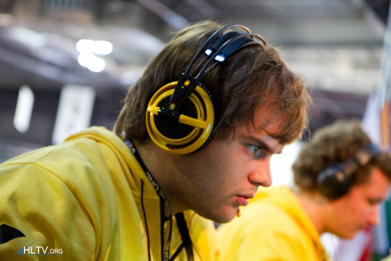

.
 Этот сайт про команду "Natus Vincere", с историей 4-х её игроков.
Этот сайт про команду "Natus Vincere", с историей 4-х её игроков.

Арсений "ceh9" Триноженко
Свои первые шаги в качестве киберсортсмена Сеня сделал в игровом клубе NAZGUL.
В то время Арсений играл под ником «esenin» — это связано с тем, что он любитель творчества Сергея Есенина. Первым коллективом, в котором он начал серьёзно играть, была львовская команда NumbazZ, в составе которой esenin стал чемпионом Львова, а следовательно и Западной Украины. В 2009 году Арсению предложили перейти в новую команду — KerchNET, где он познакомился с Сергеем Ищуком, также известным как «starix». В том же году KerchNET забирает золото на Asus Cup Winter 2009. Спустя некоторое время после победы на Asus Cup Winter 2009, esenin’а выгоняют из KerchNET и он знакомится с Даниилом «Zeus» Тесленко, который привёл его в команду pro100.
В составе Natus Vincere
В 2009 году с помощью известного мецената Мурата Жумашевича, известного как Арбалет, основана команда Arbalet.UA, которая со временем переросла в Natus Vincere. В это время esenin меняет ник на «ceh9» — упрощенное от «Арсения» Сеня, написанное на leet. Именно в составе Na’Vi он добивается наибольших успехов, в частности, команда впервые в истории мирового киберспорта выиграла три главных турнира за один год — Intel Extreme Masters, Electronic Sports World Cup и World Cyber Games 2010.
Уход из киберспорта:
В 2013 году Арсений объявил об окончании карьеры киберспортсмена. Уход двух игроков из команды прокомментировала администрация:
Многие из наших фанов разуверились в коллективе, а результаты на последних турнирах оставляли желать лучшего. Ввиду этого мы хотим сообщить, что Антон «kibaken» Колесников покидает коллектив. Также игровую карьеру в составе Na`Vi заканчивает Арсений «ceh9» Триноженко, который, тем не менее, остается в организации и будет задействован в новых проектах нашего киберспортивного клуба
Сам ceh9 сказал о своем уходе так:
"Я сам для себя решил самоустраниться от процессов, которые происходили, посмотреть на всё это сверху. В итоге мы имеем новый состав, я рад этому. Мне немного надоело на протяжении одиннадцати лет доказывать что ты лучший, хочется попробовать себя в новом амплуа"